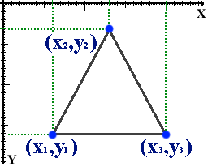

Каждый элемент <area> определяет активные области изображения, которые являются ссылками.
Рисунок с привязанными к нему активными областями называется в совокупности картой-изображением.
Такая карта по внешнему виду ничем не отличается от обычного изображения, но при этом оно может быть разбито на невидимые зоны разной формы, где каждая из областей служит ссылкой.
Тег <area> задает форму области, ее размеры, устанавливает адрес документа, на который следует сделать ссылку, а также имя окна или фрейма, куда браузер будет загружать документ.
Этот тег всегда располагается в контейнере <map>, который связывает координаты областей с изображением.
Несколько областей могут перекрывать друг друга, сверху будет та, которая в коде HTML располагается выше.
Правильный четырёхугольник [shape="rect"]
х1,y1,x2,y2 - Задаются «x» и «y» координаты левой верхней и правой нижней вершины прямоугольника.
Окружность [shape="circle"]
х,y,r - Задаются «x» и «y» координаты центра окружности и значение радиуса («r»).
Значение радиуса может быть выражено в процентах. В этом случае вычисление радиуса происходит по координате центра окружности с наименьшим значение (то есть за основу берётся либо значение «x», либо значение «y»).
Многоугольник [shape="poly"]
х1,y1,х2,y2,х3,y3...,хn,yn - Задаются «x» и «y» координаты всех вершин многоугольника. Первая и последняя пара «x» и «y» координат должна быть одинаковой, для того чтобы образовать многоугольник. В случае, когда эти значения координат не совпадают браузер должен самостоятельно создать дополнительную пару координат совпадающую с первой парой координат, для того чтобы образовался многоугольник.
